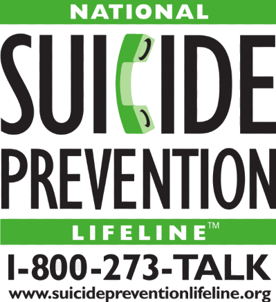
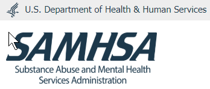
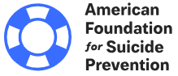

Behavioral Health/Substance Abuse Resources
Here you may find additional external resources that specialize in mental health and substance abuse.
National Alliance on Mental Illness (NAMI)
NAMI, the National Alliance on Mental Illness, is the nation’s largest grassroots mental health organization dedicated to building better lives for the millions of Americans affected by mental illness. In case of an emergecy you may reach them by phone toll free at 1-800-950-NAMI (6264). For more information click here to visit their website - NAMI
Suicide Prevention Lifeline
The Lifeline provides 24/7, free and confidential support for people in distress, prevention and crisis resources for you or your loved ones, and best practices for professionals. In case of an emergency you may reach someone by phone 24 hours a day 7 days a week toll free at 1-800-273-8255. For more information click here to visit their website - Suicide Prevention Lifeline
Substance Abuse and Mental Health Services Administration (SAMHSA)
The Substance Abuse and Mental Health Services Administration (SAMHSA) is the agency within the U.S. Department of Health and Human Services that leads public health efforts to advance the behavioral health of the nation. SAMHSA's mission is to reduce the impact of substance abuse and mental illness on America's communities. For more information click here to visit their website - SAMHSA.gov
American Foundation for Suicide Prevention (AFSP)
There is no single cause to suicide. It most often occurs when stressors exceed current coping abilities of someone suffering from a mental health condition. AFSP raises awareness, funds scientific research and provides resources and aid to those affected by suicide. For more information click here to visit their website - AFSP.org



